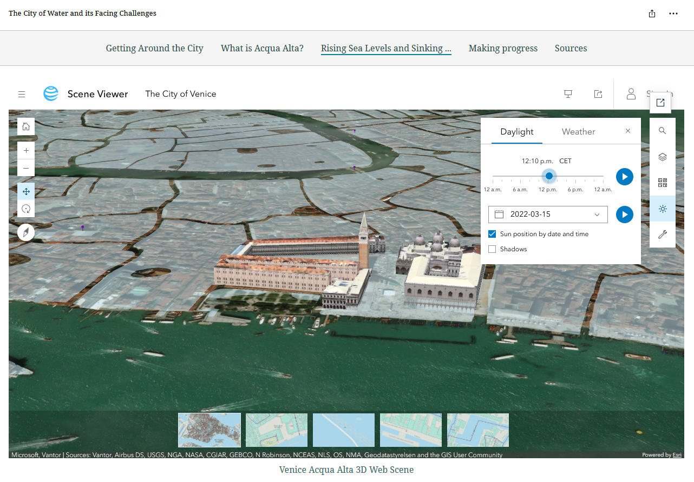
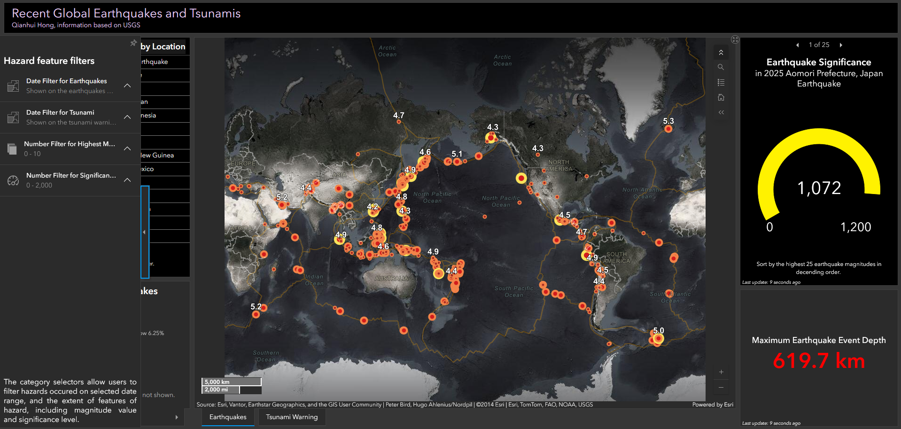
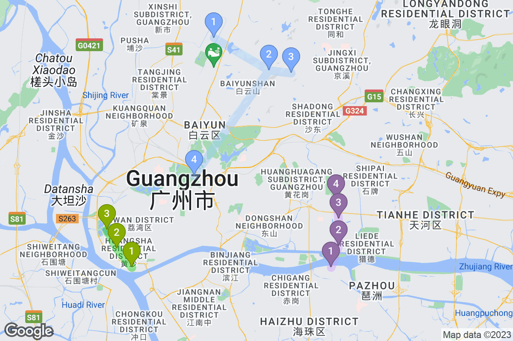
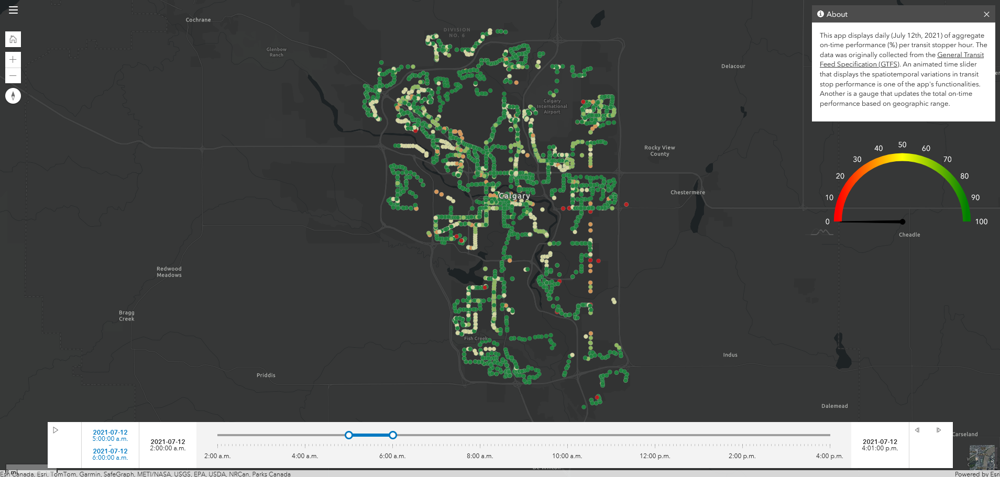

Custom Website Design and Development
Feeding Ontario's Future - Food Bank Usage Mapping
Esri ArcGIS Web Applications
ArcGIS StoryMaps
Salmon: A Disappearing Keystone Species
The City of Water and its Facing Challenges

ArcGIS Experience Builder
ArcGIS Dashboards
Global Earthquakes and Tsunami

ArcGIS Web AppBuilder
ArcGIS Field Maps
ArcGIS AppStudio
Custom Open Source Web Mapping Projects and APIs
Google Maps Static API Map

JavaScript & Calcite Maps Interface
